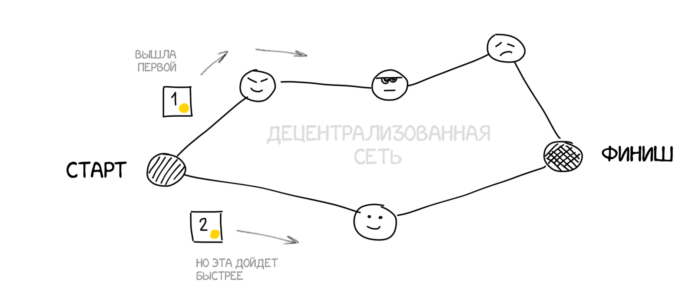

Выше сказано, что транзакции добавляются в специальный «пул неподтвержденных транзакций». Зачем нам какая-то промежуточная сущность, если у нас уже есть по сути готовые подписанные транзакции? Почему не писать их сразу в блокчейн?
Потому что сигналы из пункта А в пункт Б всегда идут с задержкой. Две транзакции могут пойти абсолютно разными путями. И транзакция, которая была инициирована первой, может дойти до получателя позже, потому что шла более длинным путём. Так получается двойное расходование, когда одни и те же деньги были отправлены сразу двум адресатам, о чем они даже не догадаются. Это вам не купюры из рук в руки передавать.
